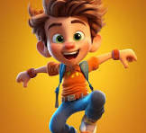
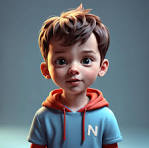

Meet the Co-Founders
BikeSight was created by two passionate students who believe every kid deserves a safer ride. Their mission: make advanced bike safety accessible and affordable for all.

Shreyas Rawat
Co-Founder & Tech Lead
Loves building smart solutions and making tech work for real-world safety.

Om Inamdar
Co-Founder & Design Lead
Passionate about design, innovation, and helping kids ride with confidence.
Together, Shreyas and Om built BikeSight to help kids everywhere ride smarter, safer, and freer. Their journey is just beginning—join the movement!